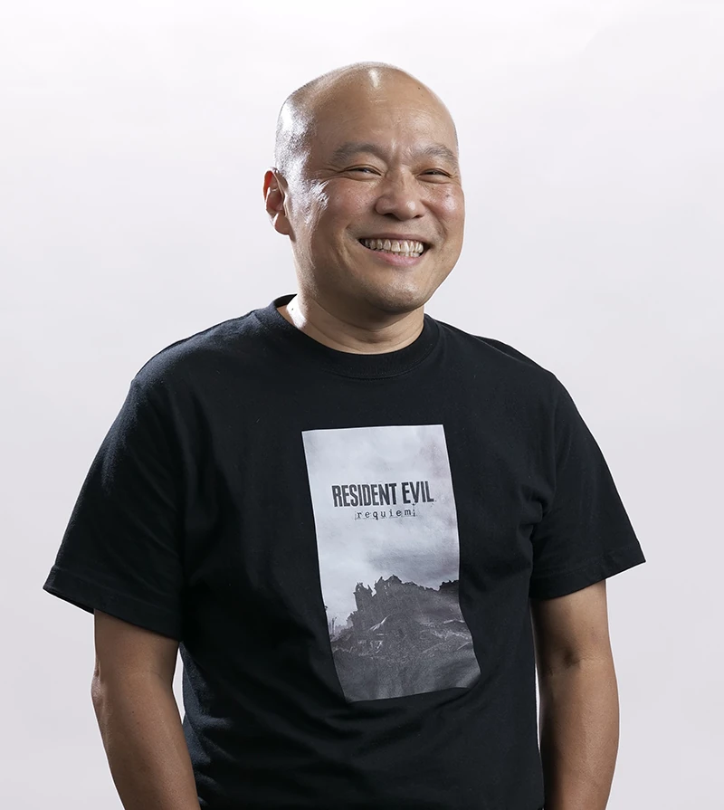
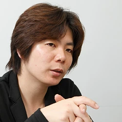
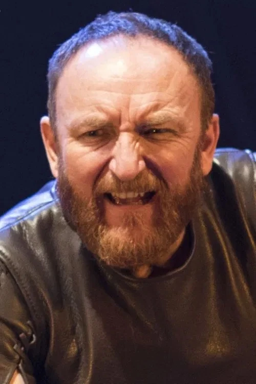

Koshi Nakanishi
Koushi Nakanishi est le réalisateur connu pour Resident Evil VII: Biohazard - Not a Hero (2017), Resident Evil: Requiem (2026) et Resident Evil: The Mercenaries 3D (2011).

Koushi Nakanishi est le réalisateur connu pour Resident Evil VII: Biohazard - Not a Hero (2017), Resident Evil: Requiem (2026) et Resident Evil: The Mercenaries 3D (2011).
Saxon a officié en tant que directeur de casting, de performance et de doublage pour Resident Evil: Requiem, titre de Capcom sorti en 2026. Imaginarium Studios a assuré la capture de mouvement pour le jeu.

Il est actuellement l'un des producteurs principaux de la franchise Resident Evil. Kawata a rejoint Capcom en 1995, se concentrant sur la conception des jeux. En 2004, il est devenu producteur.
Masato Kumazawa est un développeur de jeux vidéo chez Capcom et le producteur principal de Resident Evil Requiem, sorti le 27 février 2026.

Kenji Fukasawa est un concepteur de jeux et un scénariste japonais de renom chez Capcom, surtout connu dans la franchise survival horror en tant que concepteur de jeu et scénariste principal pour Resident Evil Requiem (2026).

Hayate Goto est un scénariste de jeux vidéo associé aux projets de Capcom. Il a contribué à des opus majeurs de la franchise phare de survival horror de l'éditeur. Resident Evil: Requiem (2026) : Il est crédité comme co-scénariste aux côtés de Kenji Fukasawa et Haris Orkin pour cet épisode principal mettant en scène Leon S. Kennedy.

Le scénariste et romancier américain Haris Orkin est le scénariste principal de Resident Evil : Requiem, l'opus principal très acclamé de 2026 de la franchise emblématique de survival horror de Capcom.
Keiji Teranishi a été concepteur de jeu principal pour le jeu d'horreur et de survie Resident Evil Requiem (également connu sous le nom de Resident Evil 9) de Capcom, sorti le 27 février 2026.

Isamu Hara est un concepteur de jeux vidéo japonais chevronné, surtout connu pour son travail considérable sur la conception du gameplay de la franchise phare Resident Evil de Capcom.

Tomonori Takano est le directeur artistique de Resident Evil Requiem, le neuvième opus principal très attendu de la franchise emblématique de survival horror de Capcom, dont la sortie est prévue le 27 février 2026. Artiste chevronné de Capcom, Takano a précédemment occupé le poste de directeur artistique sur Resident Evil 6, Resident Evil 7: Biohazard et Resident Evil Village.

Grace Ashcroft : Interprétée par Angela Sant'Albano. Il s'agit d'une analyste introvertie du FBI qui enquête sur la mort de sa mère dans un hôtel abandonné.

Leon S. Kennedy : Interprété par Nick Apostolides. L'acteur reprend son rôle iconique des récents remakes pour incarner une version plus mûre et endurcie de l'agent du DSO.

L'acteur anglais Antony Byrne prête sa voix et ses mouvements au principal méchant, le Dr Victor Gideon.

Eden Riegel reprend son rôle de Sherry Birkin dans le jeu d'horreur et de survie Resident Evil: Requiem, sorti en 2026. Elle assure à la fois le doublage anglais et la capture de mouvement du personnage.

Craig Burnatowski a prêté sa voix et réalisé la capture de mouvement pour le mystérieux nouvel antagoniste Zeno.
L'actrice de théâtre irlandaise Emma Rose Creaner prête sa voix anglaise et réalise la capture de performance pour Emily (ainsi que pour un personnage nommé Chloe et diverses voix de clones).

Actor Richie Campbell plays the character Nathan Dempsy in the 2026 survival horror game Resident Evil Requiem, providing both the English voice acting and motion-capture performance for the role.
Formateur
Ancien concepteur multimédia devenu formateur, Benoît partage aujourd’hui son savoir avec la même énergie qu’il met dans ses projets créatifs. Passionné par le web, la vidéo et les nouvelles technologies, il aime vulgariser le monde numérique et aider les gens à comprendre comment tout ça fonctionne pour de vrai.
Agente de développement et d'intégration socioprofessionnelle
Toujours pleine d'énergie, drôle et d'une immense passion pour son travail. Passionnée par l'éducation, la pédagogie, le mentorat et l'utilisation de la créativité et des connaissances pour favoriser l'apprentissage et le développement des jeunes.
Conseillère en emploi
Passionnée par le coaching et la formation, elle mets à profit sa esprit d’analyse, sa sensibilité sociale, sa écoute active et sa créativité pour accompagner les jeunes dans leurs démarches et leurs stratégies de recherche d’emploi, toujours dans une approche humaine et bienveillante.
Formateur
Après plus d'une décennie à travailler comme infographiste, Alix se consacre désormais à approfondir ses connaissances des arcanes de l'informatique et de la cybersécurité.

Formateur
Après plus d'une décennie à travailler comme infographiste, Alix se consacre désormais à approfondir ses connaissances des arcanes de l'informatique et de la cybersécurité.